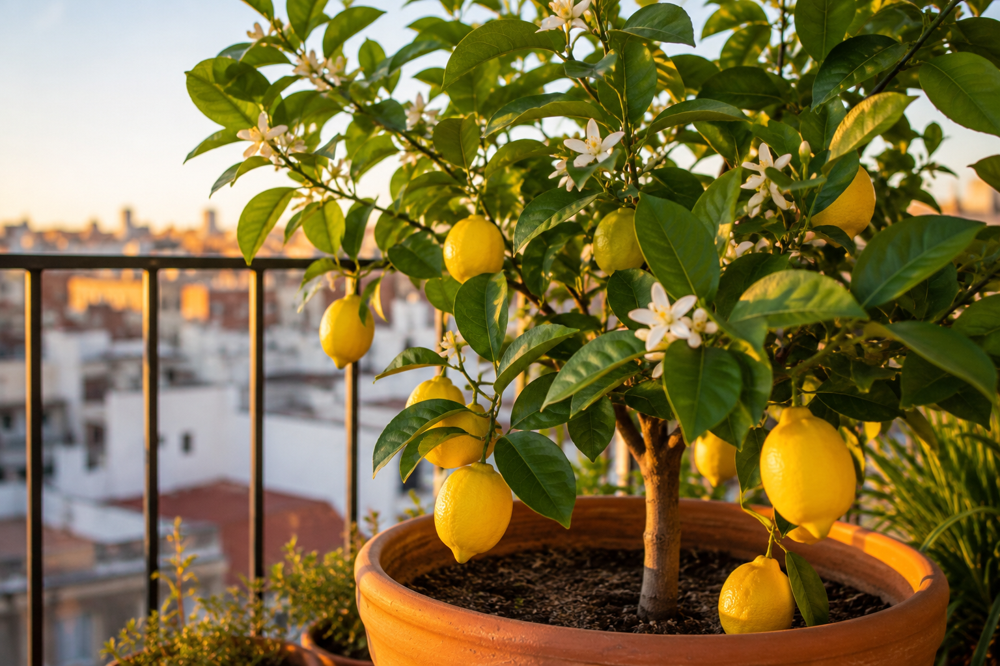

El limonero es de los frutales que mejor se adaptan a vivir en maceta: tolera muy bien la poda, sus raíces no son invasivas y, con los cuidados adecuados, puede darte limones durante años en un balcón o terraza. La gran ventaja de tenerlo en maceta frente a plantarlo en el suelo es justo la que decide su supervivencia en gran parte de España: puedes moverlo para protegerlo del frío.
1. El frío: su punto débil número uno
Esto es lo más importante de toda la guía. El limonero no soporta las heladas: por debajo de los -3 °C la parte aérea sufre daños serios, y un frío intenso puede matarlo. Por eso, si vives en una zona con inviernos fríos, tenerlo en maceta es la mejor decisión: cuando lleguen las heladas, lo arrimas a una pared protegida, lo cubres con una manta térmica (funda de tela transpirable) o lo metes en un lugar resguardado.
- Zona mediterránea, subtropical y costa sur: el limonero vive bien casi todo el año al aire libre. Es su clima ideal.
- Zona continental e interior: aquí es donde la maceta marca la diferencia. Hay que protegerlo activamente en invierno de las heladas.
- Zona atlántica (norte): el frío no es tan extremo, pero el exceso de humedad y la falta de sol pueden reducir la producción.
Para saber exactamente cuándo llegan los primeros fríos a tu municipio, el calendario de siembra te orienta según tu zona climática real.
Lo que necesitas para un limonero sano (verificado en Amazon):
Sustrato específico para cítricos: Drenaje y acidez ligera; evita que las hojas amarilleen. Ver en Amazon →
Maceta grande con drenaje: Mínimo 40-50 cm de diámetro para que la raíz crezca. Ver en Amazon →
Abono para cítricos: Rico en nitrógeno y potasio, clave para que florezca y dé fruto. Ver en Amazon →
2. Sol, mucho sol
El limonero necesita al menos 6-8 horas de sol directo al día. Si no las recibe, crecerá con hojas bonitas pero dará pocas flores y pocos frutos. Colócalo en la zona más soleada de tu balcón o terraza, resguardado del viento fuerte (que lo seca), idealmente cerca de una pared que le dé algo de protección.
3. Riego: el equilibrio justo
El limonero necesita agua regular, sobre todo en primavera y verano, pero el encharcamiento es su segundo gran enemigo después del frío. Riega cuando la capa superior del sustrato esté seca al tacto, y asegúrate de que la maceta drena bien. Si tienes un plato debajo, vacía el agua sobrante a los 15 minutos: las raíces no deben quedarse en agua estancada. En verano puede necesitar riego cada 2 días; en invierno, mucho menos.
🍋 Hojas amarillas: si las hojas del limonero se ponen amarillas, suele ser por sustrato inadecuado (demasiado alcalino) o por exceso de agua. Un sustrato específico para cítricos previene el problema desde el principio.
4. Plagas típicas (y fáciles de tratar)
Los cítricos atraen sobre todo pulgón, cochinilla y araña roja. La buena noticia es que se tratan fácil con métodos ecológicos como el jabón potásico o el aceite de neem, sin químicos agresivos. La clave es revisar las hojas con regularidad y actuar al primer signo, antes de que la plaga se extienda. En nuestra guía de plagas tienes cómo identificar y tratar cada una.
5. Variedades que van bien en maceta
No todas las variedades son iguales de adecuadas para maceta. Las más recomendadas para cultivo en contenedor son las variedades compactas como el limonero Meyer (más resistente al frío y muy productivo), el Eureka (conocido como "cuatro estaciones" porque da fruto casi todo el año) o el Lisboa. Mejor comprar una planta de 2-3 años en vivero que intentar partir de semilla, que tarda años y rara vez sale bien.
Calcula los datos exactos para tu caso
Estas herramientas gratuitas te dan los números exactos para tu situación, sin registro:
← Volver a Consejos | Te puede interesar: Cómo cultivar arándanos en maceta · Qué abono comprar según la planta